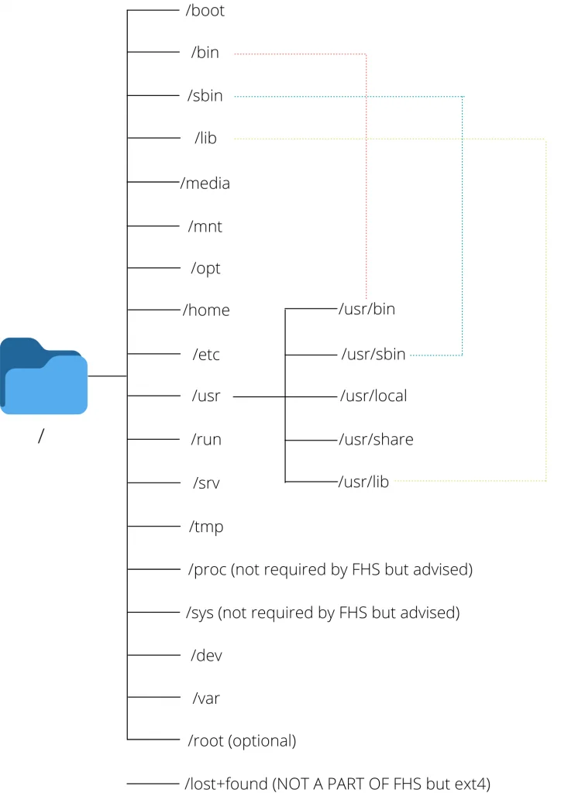

◉ O padrão de hierarquia do sistema de arquivos
Quase todas as distribuições do Linux são compatíveis com um padrão universal para a estrutura de diretórios do sistema de arquivos conhecido
como Filesystem Hierarchy Standard (FHS). A ESF define um conjunto de diretórios, cada um com sua função especial.
A barra (/) é usada para indicar o diretório raiz na hierarquia do sistema de arquivos definida pelo FHS.
Quando um usuário efetua login no shell, ele é levado ao seu próprio diretório de usuário, armazenado em /home/. Isso é chamado de diretório
inicial do usuário. O FHS define /home/ como contendo os diretórios home para usuários regulares.
O usuário root tem seu próprio diretório inicial especificado pelo FHS: /root/. Note que / é referido como o “diretório raiz”, e que é
diferente de root/, que é armazenado dentro de /.
Como o FHS é o layout do sistema de arquivos padrão em máquinas Linux e cada diretório dentro dele é incluído para atender a um propósito
específico, ele simplifica o processo de organização de arquivos por sua função.
ESTRUTURA:

/ (raiz)
Este é o início da hierarquia do sistema de arquivos do Linux. Todos os caminhos de arquivo se originam da raiz. Os diretórios listados
acima ou links simbólicos para esses diretórios são necessários em / caso contrário, a estrutura do arquivo não é compatível com FSH.
/boot
Este diretório contém todos os arquivos necessários para o sistema inicializar
Isso inclui os arquivos do kernel, initrd, initramfs, bootloader etc.
/bin
Armazena binários de comando essenciais que podem ser usados tanto pelo administrador do sistema quanto pelo usuário, como cat,ls,mv,ps,mount
etc.
Esses comandos são usados para inicializar um sistema (acessar arquivos de inicialização, montar unidades) e podem ser usados ao reparar um
sistema quando os binários em /usr não estiverem disponíveis.
/sbin
Assim como /bin, /sbin também contém binários de sistema essenciais. No entanto, esses binários devem ser usados apenas por um administrador
de sistema, e não por um usuário normal.
Esses binários são usados principalmente para gerenciamento de dispositivos. Por exemplo, fdisk, fsck, mkfs, ifconfig, reboot.
/lib
As bibliotecas são arquivos de código padrão que definem os comandos usados em uma linguagem de programação. Durante a compilação, um
compilador procura essas bibliotecas para dar sentido ao código, assim como podemos procurar um dicionário para entender o significado
das palavras enquanto lemos um livro.
Este diretório contém todas as bibliotecas necessárias para inicializar o sistema e para executar os comandos em /bin e /sbin.
Isso também contém módulos de kernel que controlam muito do seu hardware e funcionamento do dispositivo
Muitas vezes, existem diferentes bibliotecas de 32 bits e 64 bits com o mesmo nome. Para evitar qualquer conluio, esses binários são
mantidos em dois diretórios separados, denominados /lib32 e /lib64.
/media
Este diretório contém vários subdiretórios onde o sistema monta dispositivos removíveis, como drives USB.
/mnt
Este diretório pode ser usado por um usuário para montar manualmente um dispositivo. (ao contrário de /media que é usado apenas pelo sistema)
A convenção atual entre os usuários é criar um subdiretório separado em /mnt e montar o dispositivo nesse subdiretório, enquanto a
tradição mais antiga é montar o dispositivo diretamente em /mnt.
/opt
/opt contém bibliotecas e binários relacionados a pacotes que não são instalados pelos gerenciadores de pacotes do seu sistema, mas
são instalados por terceiros, como o botão de atualização do aplicativo do Discord.
/opt é uma alternativa menos popular de /usr/local . É o fornecedor quem decide para onde vão as bibliotecas e binários, mas geralmente
softwares mais monolíticos e proprietários, como zoom use /opt.
/home
Home contém todos os arquivos específicos do usuário pessoal. Ele contém diretórios separados para cada usuário que podem ser acessados
por cd /home/username
É aqui que você faz a maior parte do seu trabalho. Todos os downloads, fotos, músicas, etc. em seu sistema estão em /home.
O arquivo de configuração específico do usuário para cada aplicativo pode ser encontrado em /home/[username]/.conf
Você pode ir para o diretório inicial de qualquer usuário executando cd ~[username] . Se houver apenas um usuário no sistema, apenas cd ~
funciona.
/etc
Este diretório contém os arquivos de configuração do seu sistema.
O nome do seu dispositivo, suas senhas, sua configuração de rede, DNS, crontabs, data e hora ..etc são armazenados aqui nos arquivos de
configuração.
Este diretório não pode conter nenhum arquivo binário executável de acordo com o FHS.
Esses arquivos de configuração afetam todos os usuários do sistema. Se você deseja fazer alterações de configuração para um usuário
específico, ~/.conf/ deve ser usado em vez de /etc/
/usr
O diretório /usr tem origens muito interessantes. No momento da formação, deveria agir como o diretório /home, mas quando as pessoas ficaram
sem espaço em /bin, começaram a armazenar os binários não essenciais em /usr. Você pode ler toda a história aqui.
Com o tempo, esse diretório foi criado para armazenar os binários e as bibliotecas dos aplicativos instalados pelo usuário. Por exemplo,
enquanto o bash está em /bin (já que pode ser usado por todos os usuários) e o fdisk está em /sbin (já que deve ser usado apenas por
administradores), os aplicativos instalados pelo usuário, como o vlc, estão em /usr/bin.
Dessa forma, /usr tem sua própria hierarquia, assim como / (root).
/usr/bin
Este é o diretório primário de comandos executáveis no sistema.
Contém todos os binários de comando instalados pelo usuário
Se você deseja executar seus scripts usando um único comando, geralmente os coloca em /usr/bin/
/usr/sbin
Contém binários de comando instalados pelo usuário que só podem ser usados por administradores de sistema.
/usr/lib
Contém as bibliotecas essenciais para pacotes em /usr/bin e /usr/sbin assim como /lib.
/usr/local
Isso é usado para todos os pacotes compilados manualmente a partir do código-fonte pelo administrador do sistema.
Este diretório possui uma hierarquia própria com todas as pastas bin, sbin e lib que contém os binários e aplicativos dos softwares compilados.
/usr/share
Contém vários arquivos diversos independentes de arquitetura
Arquivos Man, lista de palavras (dicionários) e arquivos de definição estão incluídos.
O caso de /usr merge – Existe realmente uma diferença entre /bin e /usr/bin ?
Historicamente, a necessidade de mover binários não essenciais para uma pasta diferente surgiu devido à falta de espaço no disco rígido /bin.
Porém, isso foi em 1971. Hoje, mais de 50 anos depois, não enfrentamos mais problemas do mesmo tamanho. Isso tornou inúteis duas pastas
separadas para binários padrão e instalados pelo usuário. Com o tempo, isso também causou uma confusão nos sistemas de arquivos, com o
diretório tendo binários redundantes, o que o torna confuso.
Por esta razão, ao longo dos anos, muitas distribuições (Debian, Fedora, Ubuntu, Arch etc.) fundiram /usr/bin e /bin no mesmo diretório.
Da mesma forma, /usr/sbin – /sbin e /usr/lib – /lib foram mesclados no mesmo diretório para simplificar a estrutura do diretório. Agora
a pasta /bin é apenas um link simbólico para o diretório /usr/bin e o mesmo para outras mesclagens.
Você pode ler mais sobre a discussão sobre essas mesclagens aqui e aqui.
/run
Este diretório contém os metadados do dispositivo desde a última inicialização.
Isso inclui dados de todos os processos e daemons do sistema que foram executados na sessão atual.
Os arquivos neste diretório são apagados (removidos ou truncados) no início do processo de inicialização.
/srv
Você só usará este diretório se o seu dispositivo estiver funcionando como um servidor web, pois este diretório contém todos os arquivos
relacionados aos servidores web.
Por exemplo, se você hospedar um servidor FTP, todos os arquivos que precisam ser compartilhados devem, por padrão, estar em /srv/ftp.
/tmp
Contém arquivos temporários dos processos atualmente em execução.
Esses dados também são liberados após cada inicialização.
/process
Assim como /dev que fornece dispositivos como arquivos, esta pasta contém informações do sistema e informações do kernel como arquivos.
Isso inclui informações sobre memória, partições, hardware (bateria, temperatura, etc.), todos os módulos do kernel carregados, etc.
/sys (específico da distro)
Ele contém informações mantidas de forma semelhante em /proc/, mas exibe uma visão hierárquica de informações específicas do dispositivo
em relação aos dispositivos hot plug.
/dev
Contém arquivos de dispositivo para todos os dispositivos físicos e virtuais montados no sistema.
Arquivos de dispositivo não são arquivos no sentido tradicional. Eles são uma maneira de os drivers de dispositivo acessarem e interagirem
com o referido dispositivo
Geralmente o armazenamento primário é chamado de sda (/dev/sda)
/var
Contém dados variáveis sobre os processos em execução.
Isso inclui logs, cache e spools para todos os aplicativos.
Spools são os dados que estão aguardando processamento posterior. Exemplos são um documento esperando na fila da impressora ou um cabeçalho
de e-mail esperando para ser enviado.
/root (opcional)
Este deve ser o diretório inicial do usuário root, ao contrário de /home, que é o diretório inicial dos usuários não root.
/lost+found (recurso ext4)
Embora não esteja listado no FHS, este diretório é gerado automaticamente pelo fsck.
Ele armazena todos os arquivos órfãos e corrompidos nesta pasta.
Isso inclui os arquivos que você não pôde salvar devido a um corte de energia, arquivos corrompidos devido a uma falha no processo de
atualização, etc.